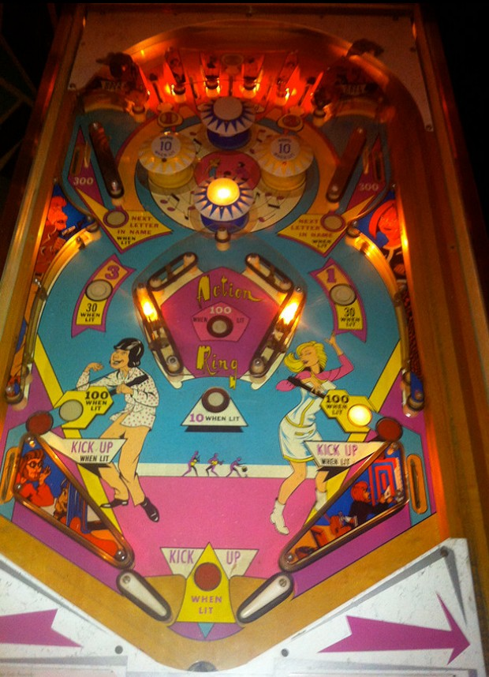

The main progression is to light the numbers 1-2-3. These can be earned from the first, third, and fifth top lanes from left respectively. #3 can also be earned at the middle left rollover button and #1 can also be earned at the middle right rollover button, but #2 can only be earned at the center top lane. Top lanes with numbers always score 10 points. Top lanes that do not give 1-2-3 numbers always score 30 points. The side rollover buttons score 30 points when their number is lit; when not lit, pressing one of these buttons will light its number, but doesn't seem to score any points.
Lighting #1 and #3 will in turn light the right or left yellow pop bumpers for 10 points per hit instead of 1. Both blue pop bumpers always score 1 point per hit.
Completing 1-2-3 opens the gates in the upper left and upper right corners of the game. The ball can only really go through these gates as a ricochet off the pop bumpers. Both gates open and close together. Going through a gate lane scores 300 points and closes the gates, resetting the 1-2-3 progression. When the gates are open, one of the two gate lanes will be lit for Next Letter, alternating based on 10-point switch hits. If a gate is lit for Next Letter, going through that lane lights the next letter in the word Beatniks on the backglass, which carries over across players, balls, and games. Spelling Beatniks in full awards a free game and resets the sequence.
The Action Ring located dangerously close to the flippers is a chamber full of 1-point slingshots and a single rollover button. The rollover button scores 10 points, or 100 when lit; completing 1-2-3 lights this rollover button for the rest of the ball. There is also a rollover button just below the Action Ring which scores 1 point or 10 when lit, and is likewise lit for the rest of the ball after completing 1-2-3. The Action Ring can only be entered or exited from above or below. Never shoot directly into the Action Ring due to the high risk of a center drain that comes from a missed shot or a fast exit feed.
There are no in lanes. Flippers back up directly to the slingshots, which always score 1 point. Out lanes score 10 points when not lit white, or 100 when lit white; one out lane is lit white at a time, alternating each time 10 points are scored anywhere in the game. 1/10 of the time (based on 1-point switch hits anywhere in the game), both out lanes will be lit red, indicating that they award an extra ball. Maximum 1 extra ball per ball in play. There is no end of ball bonus feature. The tilt penalty appears to be adjustable to be either just ending the ball in play, or ending the whole game for the player who tilted.
An add-a-ball variant of Beatniks exists where extra balls are kicked upwards from the out hole between the flippers and returned to the playfield as an extended play feature, rather than being plunged like a conventional extra ball. Such copies have inserts labelled "Kick Up" rather than "Shoot Again" near the out lanes and out hole.
The below picture of Beatniks' playfield was taken from Pinside image #23853.
